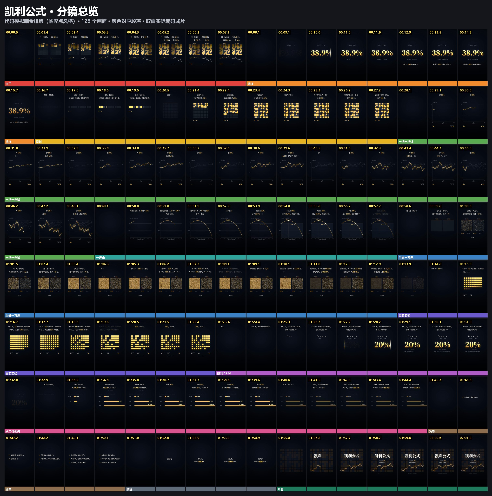

凯利公式
122 秒竖屏，代码模拟暗金排版，只有音乐。这里是有声预览，默认暂停，点了才响。1080×1920 成片。观点改编自凯撒的复利实验室，算例为模拟，不构成投资建议。
"Stay the Course" Kevin MacLeod (incompetech.com) Licensed under Creative Commons: By Attribution 4.0 https://creativecommons.org/licenses/by/4.0/ Music trimmed, loudness-normalized and faded.

制作说明和来源 · 另一种风格：3D 微缩（币安） · 仓库